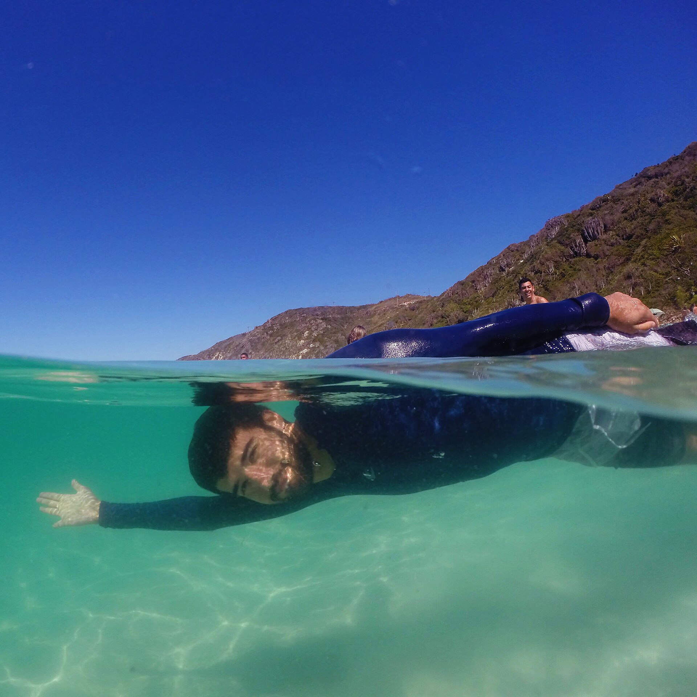

Escolha o pacote
Informe destino, data, ponto de embarque e quantidade de viajantes.
Excursões rodoviárias • novos lotes
Ônibus de excursão, pontos de encontro programados e roteiros prontos para você conhecer destinos incríveis sem se preocupar com a estrada.
Pontos de embarque em São Paulo, Minas Gerais e Rio de Janeiro, conforme o destino e a formação do grupo.
Veja duração, locais de embarque, o que está incluído e a programação.
Ver este pacoteCinco destinos, cinco experiências
Os pontos de embarque e horários exatos dependem da rota final do ônibus e serão confirmados pela equipe.

Do interesse ao embarque
O atendimento começa no WhatsApp e cada cobrança é preparada pela equipe depois da confirmação da vaga.
Informe destino, data, ponto de embarque e quantidade de viajantes.
A equipe confirma disponibilidade, rota, hotel quando houver e condições do lote.
O vendedor gera uma cobrança individual com QR Code Pix, valor do sinal e saldo restante.
Após pagar, preencha seus dados, selecione o comprovante e retorne ao WhatsApp com a mensagem pronta.
Sete dias antes, você recebe o grupo da excursão, horários, endereço do embarque e orientações.
RG, endereço e demais dados serão solicitados somente na conversa privada, nunca no grupo.
Transporte e horários
Embarques: pontos principais em terminais e regiões centrais, definidos conforme os viajantes confirmados.
Tempo de estrada: é uma estimativa e pode aumentar com embarques, trânsito, paradas e condições da rodovia.
Volta: nos pacotes de dois dias, a saída do destino está prevista para domingo às 20h. Campos do Jordão sai no fim do mesmo dia.
Confirmação: grupo, ônibus, endereço e horário final são informados até 7 dias antes.
Primeiro atendimento
Este formulário não cobra nada. Depois da conversa, o vendedor enviará um link individual para o pagamento.
Antes de reservar
Não. A equipe trabalha com pontos coletivos de encontro em terminais, estações e regiões centrais. O local exato depende da rota e será enviado 7 dias antes.
Sim, em Arraial do Cabo, Guarujá, Bertioga e Búzios. O café da manhã também está incluído. Campos do Jordão é bate-volta e não possui hotel. Os nomes e endereços dos hotéis serão adicionados após a confirmação dos parceiros.
Depois do atendimento no WhatsApp, o vendedor cria uma cobrança individual com o valor do sinal ou pagamento completo, QR Code Pix e saldo. O cliente paga, seleciona o comprovante e retorna ao WhatsApp para confirmação.
Somente depois da reserva, na conversa privada do WhatsApp. Nunca envie documentos no grupo da excursão.
Sim. Os horários divulgados são previsões. A confirmação final considera trânsito, pontos de embarque, quantidade de viajantes e condições da estrada.